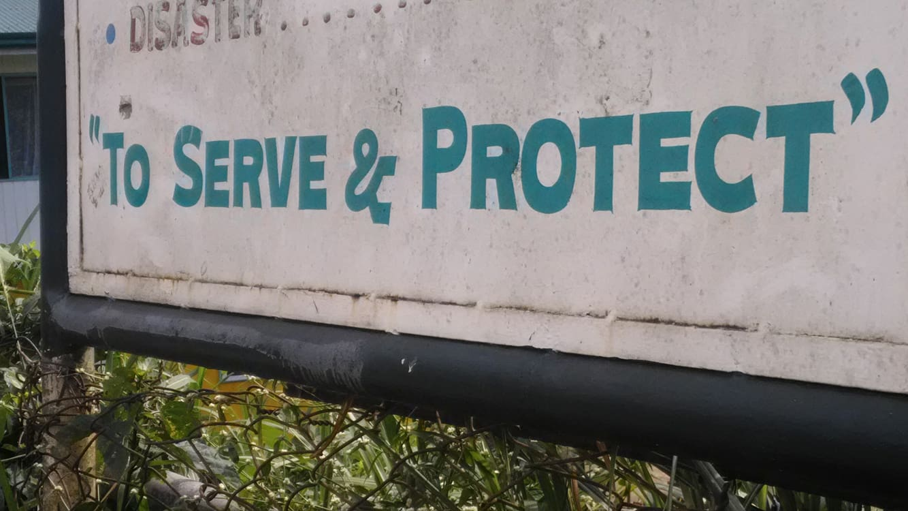
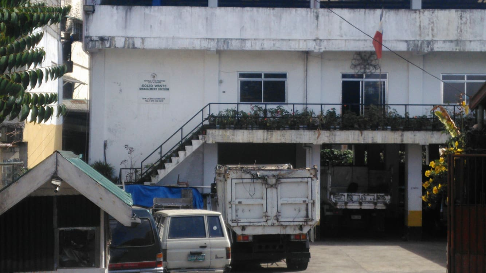
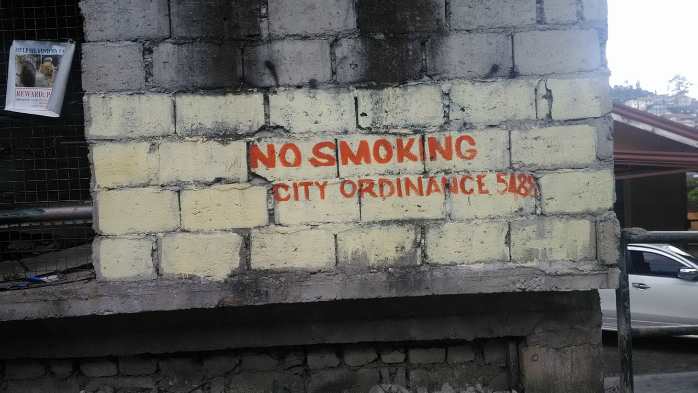
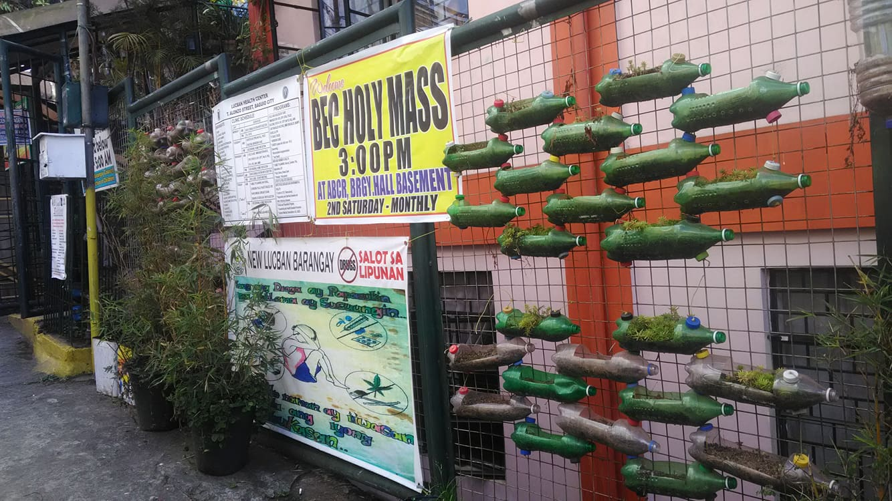
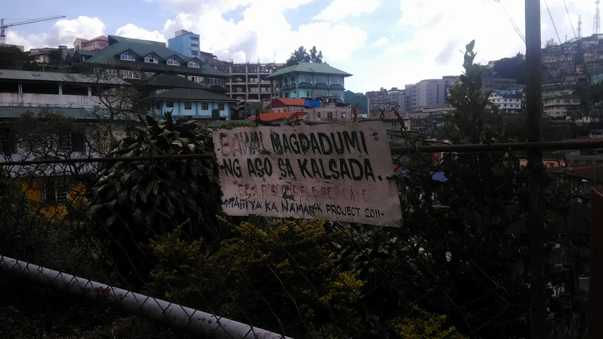
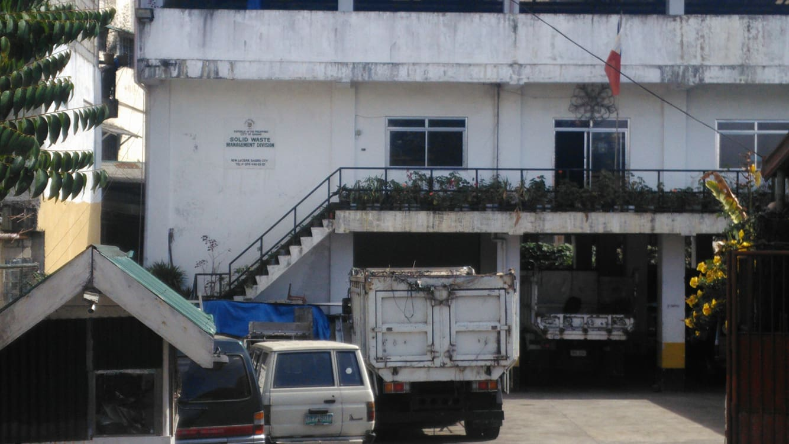
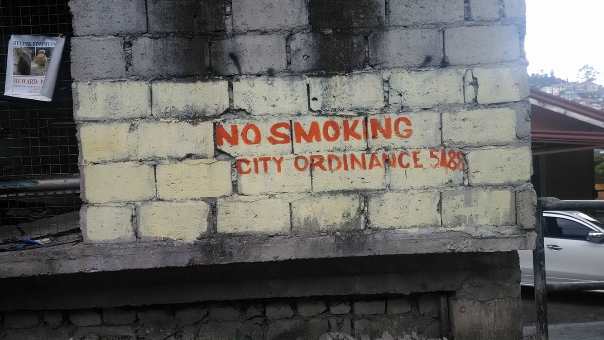
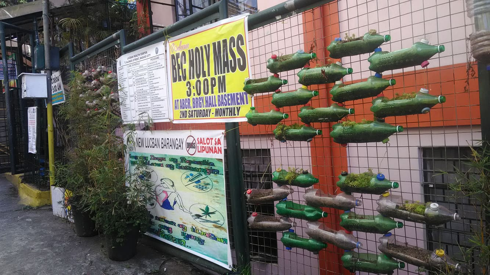
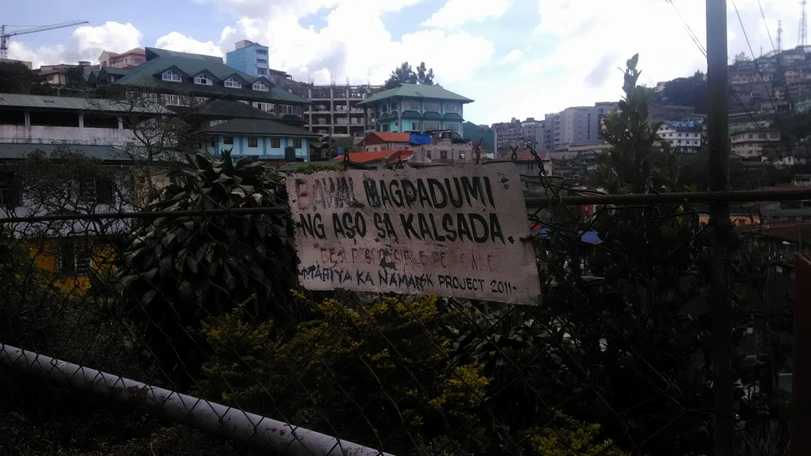

The word “governance” came from the Latin verb “gubernare,” or more originally from the Greek word “kubernaein,” which means
“to steer.” Basing on its etymology, governance refers to the manner of steering or governing, or of directing and controlling, a group of people or a state.Governance is commonly defined as the exercise of power or authority by political leaders for the well-being of their country’s citizens or subjects. It is the complex process whereby some sectors of the society wield power, and enact and promulgate public policies which directly affect human and institutional interactions, and economic and social development. The power exercised by the participating sectors of the society is always for the common good, as it is essential for demanding respect and cooperation from the citizens and the state. As such, a great deal about governance is the proper and effective utilization of resources.Governance is essentially related to politics, in that politics is often defined as the art of governance. Just as politics talks about governments, institutions, power, order, and the ideals of justice, governance also deals with the public sector, power structures, equity, and ideals of public administration. Nevertheless, they are distinct from each other in the sense that politics is broader than governance. Traditionally, the study of politics entails the concept of the “good life” and the “ideal society,” which are so broad they include a web of subjects and every possible form of government. The study of governance, on the contrary, is generally attuned to the concept of democracy, and on how the government and the civil society arrive at a decision in meeting their needs.
-WHAT IS GOVERNANCE? (2014, August 21). Retrieved January 26, 2018, from https://tamayaosbc.wordpress.com/2014/08/21/what-is-governance/
Elected officials of New Lucban
Punong Barangay : Caluza, John Banaña
Barangay Kagawad : Boholst, Jojo Matuguina
Barangay Kagawad : Fronda, Sixto Estoque
Barangay Kagawad : San Juan, Delia Lalata
Barangay Kagawad : Villalon, Ruben Blacer
Barangay Kagawad : Tagudar, Maria Calderon
Barangay Kagawad : Teliaken, Aldrin Aguia
Barangay Kagawad : Padtoc, Jerome Lawagan
MISSION
VISION
.jpg) 






